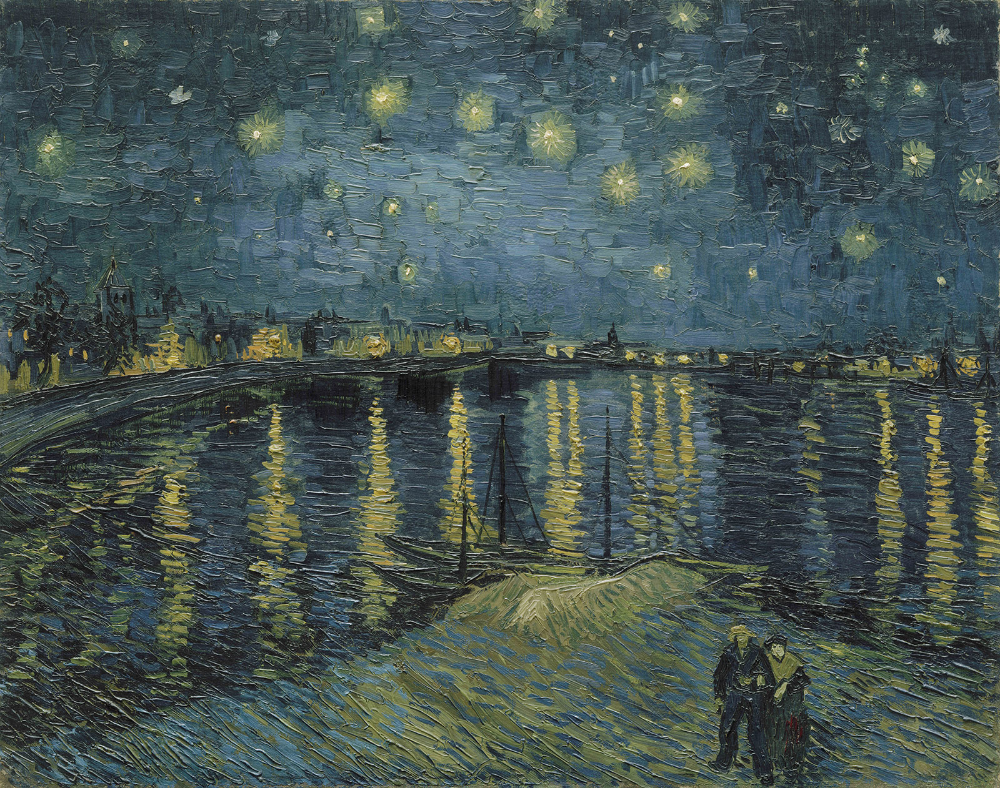

fame after death
During Van Gogh's life, he sold a total of one of his paintings.
However, after his death, his work skyrocketed in fame. In the early 20th century
specifically, he started to become a well-known name in the art community,
and he has done nothing but grow in popularity since.

Starry Night over the Rhône